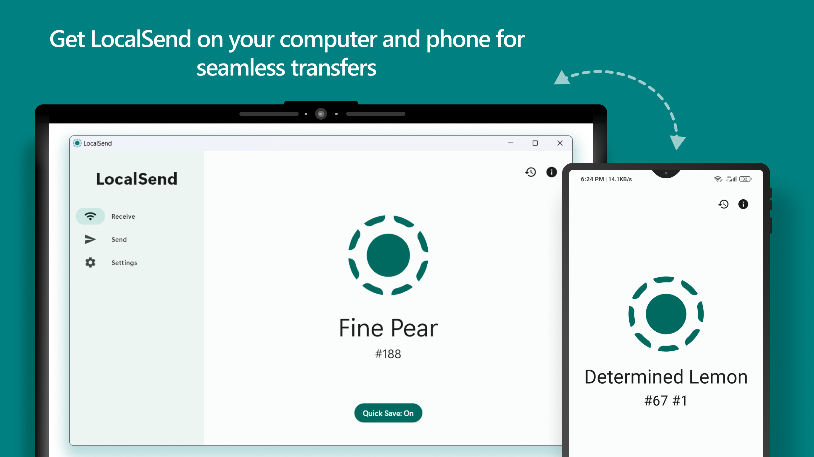
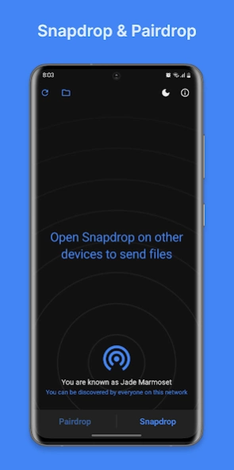

快速选择：哪款 AirDrop 替代工具适合你？
- WinSend：适合需要在 iPhone 和 Windows 间传文件，同时希望同步剪贴板的用户。
- LocalSend：适合需要免费开源、覆盖多种操作系统的用户。
- Snapdrop：适合偶尔使用、不想安装 App 的浏览器临时传输。
- Send Anywhere：适合设备不在同一网络时传文件。
如果你只想同步复制粘贴的文字和链接，请看 iPhone 与 Windows 剪贴板同步教程。
为什么需要 AirDrop 替代工具？
如果你同时使用 Windows 电脑和 iPhone，一定会遇到这些场景：
- 手机拍了照片/视频，想快速传到电脑修图或备份；
- 电脑复制了一段文字或一个文件，想粘贴到手机上使用；
- 不想通过微信、QQ 中转，避免压缩、限速和隐私风险；
- 不想插数据线，也不想把文件上传到云端。
苹果的 AirDrop（隔空投送）只能在苹果生态内使用，Windows 上没有隔空投送。下面介绍的工具，就是用来填补这个空缺，让你可以在 iPhone 和 Windows 电脑之间无线互传文件。
五款 iPhone 传 Windows 工具速览
| 工具 | 类型 | 平台 | 是否需要联网 | 适合人群 |
|---|---|---|---|---|
| WinSend | 免费 客户端 | Windows + iOS | 仅需局域网 | 专注 Win ↔ iPhone 用户 |
| LocalSend | 免费开源 | 全平台 | 仅需局域网 | 隐私敏感、技术用户 |
| Snapdrop | 免费网页 | 浏览器即可 | 需能访问 snapdrop 站点 | 临时、轻量使用 |
| Feem v4 | 免费含广告 | 全平台 | 仅需局域网 | 喜欢聊天式传输的用户 |
| Send Anywhere | 免费高级版 | 全平台 | 可离线/可跨网络 | 需要跨网络大文件传输 |
五款工具详细对比
WinSend
为 Windows 与 iPhone 打造的专属传输工具
WinSend 是一款专注于 Windows 电脑与 iPhone 之间无线传输的工具。它通过局域网直接通信，文件、图片、剪贴板文字都可以在设备间快速同步，无需上传云端，也无需注册账号。

基本使用方式
- 在 Windows 电脑上下载并运行 WinSend 客户端；
- 在 iPhone 上安装 WinSend App，确保两台设备连接同一个 Wi-Fi；
- 打开 App，iPhone 会自动发现局域网中的 Windows 设备；
- 点击“从电脑获取”可同步剪贴板，点击“发送图片/文件”可将手机内容传到电脑；
- 如果自动发现失败，可使用“手动连接”输入 Windows 电脑的 IP 地址。
优点
- 专为 Windows + iPhone 场景优化，操作简单；
- 支持剪贴板双向同步，复制粘贴无缝衔接；
- 无需互联网，局域网内传输速度快；
- 无需注册账号，保护隐私。
缺点
- 目前仅支持 Windows ↔ iOS；
- 高级功能需要订阅 Pro；
- Windows 端每次使用需保持后台运行。
LocalSend
开源、免费、全平台的 AirDrop 替代方案
LocalSend 是目前最知名的开源跨平台传输工具之一，支持 Windows、macOS、Linux、Android、iOS 之间互相传输文件和文本。它使用 UDP 多播自动发现附近设备，并通过 HTTPS 加密传输，数据不经过任何外部服务器。

基本使用方式
- 在所有设备上安装 LocalSend；
- 确保设备在同一 Wi-Fi 或局域网内；
- 打开 App，进入“发送”标签页，选择要发送的文件或文本；
- 在“附近设备”列表中选择目标设备；
- 接收方点击“接受”后，文件即可传输完成。
优点
- 完全开源免费，无广告、无内购；
- 支持几乎所有主流操作系统；
- HTTPS 加密传输，安全性高；
- 界面简洁，自动发现设备很方便。
缺点
- 必须安装客户端，无法通过浏览器直接使用；
- 部分网络环境（如企业网、访客网络）可能阻断多播发现；
- iOS 端因系统限制，后台自动发现有时不够稳定。
Snapdrop
打开浏览器就能用的网页版“AirDrop”
Snapdrop 是一个基于 WebRTC 的网页应用，界面酷似 AirDrop。只要两台设备在同一网络下并打开 snapdrop.net，就能互相发现、拖拽或点击发送文件。它最大的优势是无需安装任何 App，非常适合临时使用或给别人一次性传文件。

基本使用方式
- 在 Windows 电脑和 iPhone 上同时打开浏览器；
- 访问 snapdrop.net（或自托管版本）；
- 等待页面显示出对方的设备名称；
- 点击对方设备图标，选择要发送的文件或输入文字；
- 接收方确认后，文件开始传输。
优点
- 无需安装，打开网页即可使用；
- 界面极简，学习成本几乎为零；
- 支持 PWA，可像原生 App 一样添加到主屏幕；
- 跨平台能力极强，任何能开浏览器的设备都能用。
缺点
- 依赖公网服务器做初始发现，偶尔会出现设备不显示；
- 大文件传输不如本地客户端稳定；
- VPN、复杂网络环境容易影响连接；
- 下载的文件名可能被自动重命名。
Feem v4
像聊天一样发文件的跨平台传输工具
Feem v4 是一款老牌跨平台传输工具，主打“像聊天一样传文件”。它在 Windows、iOS、Android、macOS、Linux 上都有客户端，设备在同一 Wi-Fi 下会自动发现，支持文字、图片、视频、文件夹等多种内容传输。

基本使用方式
- 在 Windows 和 iPhone 上分别安装 Feem v4；
- 打开应用，等待设备列表中出现对方；
- 选择目标设备，进入“聊天窗口”；
- 点击附件按钮选择文件，或直接粘贴文字发送；
- 接收方在会话中查看并下载内容。
优点
- 聊天式界面，传输历史一目了然；
- 支持文件夹结构传输（部分版本）；
- 老牌工具，用户群体较广；
- 无需互联网，纯局域网传输。
缺点
- 免费版有广告，界面不够现代；
- iOS 端与系统分享菜单集成不够好；
- 部分用户反馈更新后连接不稳定；
- 已推出 Feem v5，v4 后续维护存疑。
Send Anywhere
支持跨网络、跨地域的文件传输服务
Send Anywhere 与其他工具最大的不同在于：它不仅支持局域网传输，还可以通过 6 位数字密钥在不同网络、不同地点之间传输文件。发送方上传或生成密钥后，接收方输入密钥即可下载，适合给朋友传大文件，或设备不在同一网络时使用。

基本使用方式
- 在发送设备上打开 Send Anywhere，选择要发送的文件；
- 点击发送，系统会生成一个 6 位数字密钥或二维码；
- 在接收设备上打开 Send Anywhere，选择“接收”；
- 输入 6 位密钥，等待文件下载完成；
- 同一局域网内也可直接发现 Nearby 设备快速发送。
优点
- 无需同一 Wi-Fi，跨网络也能传；
- 6 位密钥操作简单，适合给非技术用户；
- 支持大文件和多种文件类型；
- 平台覆盖全面。
缺点
- 免费版有文件大小和每日传输次数限制；
- 跨网络传输时数据可能经过中继服务器；
- 对隐私极度敏感的用户需谨慎；
- 界面相对复杂，广告/推广较多。
iPhone 传文件到 Windows 教程：以 WinSend 为例
如果你主要使用 Windows 电脑和 iPhone，WinSend 是体验最连贯的选择。下面是完整的上手步骤：
安装 Windows 端
访问 winsend.app 下载 Windows 安装包，安装后运行。首次运行可能会请求本地网络权限，请点击允许。运行后，Windows 端会在系统托盘显示图标，表示服务已启动。
安装 iOS App
在 App Store 搜索“WinSend”并安装。安装完成后打开 App，同样允许本地网络访问权限，这是发现 Windows 设备的必要条件。
确保同一网络
将 iPhone 和 Windows 电脑连接到同一个 Wi-Fi 路由器或热点。如果使用的是企业网络、校园网或访客网络，可能会阻断设备发现，此时建议使用“手动连接”。
自动发现设备
打开 iOS App，稍等片刻，首页“我的设备”区域会显示你的 Windows 电脑。如果未显示，点击标题旁的刷新按钮重新扫描局域网。

WinSend 会自动发现同一 Wi-Fi 下的 Windows 电脑。
开始传输
连接成功后：
- iPhone → Windows：点击“发送图片到电脑”或“发送文件到电脑”，选择内容后即可传输。Windows 端会自动保存到下载目录并弹出通知。
- Windows → iPhone：在 Windows 端复制一段文字或图片，iPhone 上点击“从电脑获取剪贴板”，即可把内容同步到手机剪贴板或相册。
- 剪贴板同步：开启“自动剪贴板同步”后，Windows 复制文字会自动同步到 iPhone，反之亦然。
手动连接（备用）
如果自动发现失败，点击右上角“手动连接”，输入 Windows 电脑的局域网 IP 地址（可在 Windows 端设置或命令行中查看），点击连接即可。
如何选择适合自己的 AirDrop 替代工具？
- 主要用 Windows + iPhone，追求剪贴板/文件无缝同步 → 选 WinSend，专门为这个场景设计。
- 需要覆盖全家桶（Win/Mac/Linux/Android/iOS），重视开源和隐私 → 选 LocalSend，免费开源、加密传输。
- 临时给别人传文件，不想安装任何软件 → 选 Snapdrop，浏览器打开即用。
- 喜欢聊天式会话，需要历史记录 → 选 Feem v4，会话体验更直观。
- 设备不在同一网络，或需要传给异地朋友大文件 → 选 Send Anywhere，6 位密钥跨网络传输。
开始使用
想让 iPhone 和 Windows 之间获得 AirDrop 般的传输体验？先下载 WinSend，再按照安装与配对教程完成配对，配对不到一分钟。